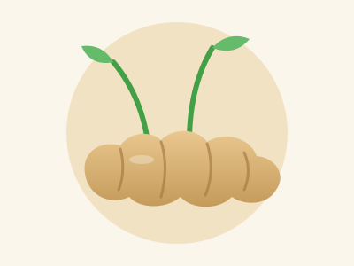
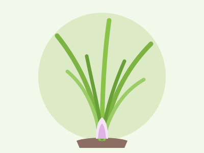
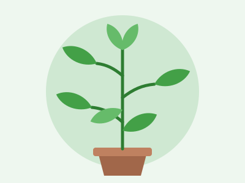

Gingembre
On ne sème pas de graine : on plante un morceau de gingembre qui porte des bourgeons. Il aime l'ombre légère et un sol toujours un peu humide.
- Plantation : début de la saison des pluies
- Récolte : 8 à 10 mois plus tard
Jardin pédagogique de la ferme-école
Quatre plantes faciles à cultiver, qui parfument la cuisine et rendent le potager plus agréable.
Lire les questions fréquentes
On ne sème pas de graine : on plante un morceau de gingembre qui porte des bourgeons. Il aime l'ombre légère et un sol toujours un peu humide.

Il adore la chaleur et le plein soleil. Arrosez au pied, sans mouiller les feuilles : un seul plant peut donner des dizaines de fruits.

Une grande herbe au parfum de citron, qui forme des touffes. Pour en avoir plus, il suffit de diviser une touffe et de replanter les morceaux.

Pincez régulièrement le bout des tiges : la plante reste touffue et donne plus de feuilles. On aime le planter entre les pieds de tomates.
Oui ! Le piment et le basilic poussent très bien dans un pot de 20 cm. Pour la citronnelle et le gingembre, choisissez un grand pot profond.
Arrosez tôt le matin ou en fin de journée, quand le dessus de la terre est sec. Le gingembre demande plus d'eau que les trois autres.
Faites-les sécher au soleil sur une claie, à l'abri de la pluie, puis gardez-les entiers ou réduits en poudre dans un bocal fermé.
C'est normal quand il fait chaud ou que la plante vieillit. Coupez les fleurs dès qu'elles apparaissent pour continuer à récolter des feuilles.